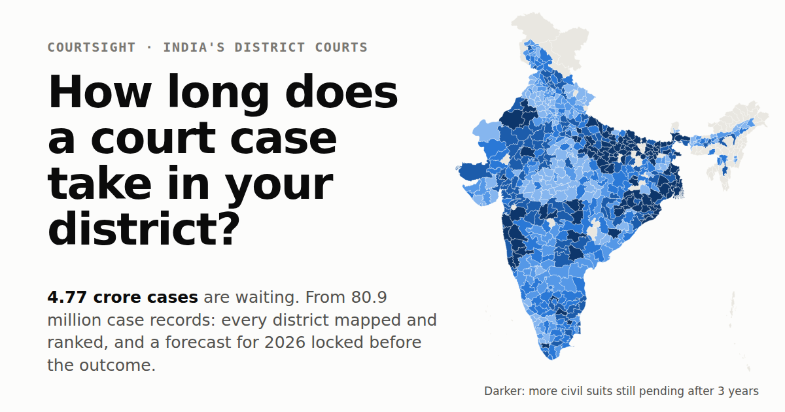

Numbers you can quote, and how not to misquote them
Every figure below is rebuilt from the public repository on each change, with its source. Use any of it with attribution to CourtSight. For district figures, the case records are licensed CC BY-NC-SA 4.0 (Development Data Lab).
Key numbers
cases pending in India's district and subordinate courts on 31 December 2025, up from 2.65 crore in 2014.
net added to the backlog every year, 2023–2025. Clearing it within ten years would need about 61 lakh extra disposals a year.
median time to a decision for an ordinary civil suit filed in 2010–2018; 27% were still pending five years after filing. All civil cases: 18 months; criminal: 7 months.
extra cases in the backlog by the end of 2021 because of COVID (range 32–70 lakh), about 12% of all pending cases then.
case-years spent waiting by the cases filed in 2010–2018; the 2.2 crore still pending when the data was collected had a median age of 2.3 years. Lower bounds: cases filed before 2010 are not in the data.
forecast for pending cases on 31 December 2026 (80% interval 4.78–5.07 crore), locked by hash on 8 October 2026 before the outcome exists, to be graded in 2027.
adf62cd20085e545730b10e62a7ffa66dae5e3f90207d197c5207f2aa5c96d2dSay these carefully
- District rankings are descriptive. A slow district is not necessarily a badly run one. Ranks carry a 90% range; when two districts' ranges overlap, they are not clearly different.
- The case records are not the whole system. They hold about 61% of the filings the official figures imply for 2015–2018, from 8% in Tripura to roughly all in Bihar. Say "in the courts eCourts recorded".
- 14 districts are withheld (including Gaya, Muzaffarpur, Bhojpur and Vaishali) because their records hold almost no decisions before 2018. Do not call them the slowest in India; the data cannot say.
- "Decided" is not "judged". It includes dismissals, withdrawals, settlements and transfers.
- 2010–2018 filings are not today's courts. No public case-level data exists after 2018.
- No figure here says how many judges India needs. The causal designs tried failed, and the project reports that.
Figures to download
 District map (SVG)
District map (SVG)


Summary card (PNG, 1200×630) Working paper (PDF)All results as CSV and JSON (GitHub)
Embed a district
Every district has a page (all districts) and an embeddable card that readers can switch between case types. In the calculator, pick a district and press "Embed on your site", or adapt this:
<iframe src="https://arnavgoel98.github.io/CourtSight/embed.html#s=Maharashtra&d=Pune&t=civ_suit" title="How long court cases take in Pune" width="100%" height="440" style="border:0;max-width:540px" loading="lazy"></iframe>
The same figures are available as data: https://arnavgoel98.github.io/CourtSight/api/v1/index.json lists every district, and each district has its own JSON file (for example api/v1/maharashtra/pune.json).
How to cite
Goel, Arnav (2026). CourtSight: measuring and forecasting India's district-court backlog. https://arnavgoel98.github.io/CourtSight/
Questions or corrections: open an issue on GitHub. Corrections are published, as the audit shows.